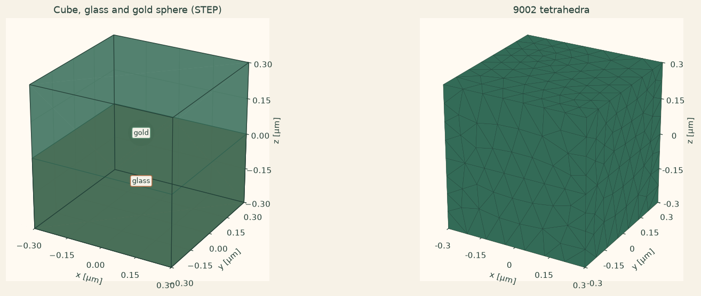

Docs › Examples › Gold nanoparticle on a glass substrate
Wave optics · 3D
Gold nanoparticle on a glass substrate
A gold sphere of 100 nm diameter 5 nm above glass is lit by a TE plane wave at 45 degrees from two azimuthal directions; absorption and scattering cross-sections at 550 nm.
Run locally with OneSimulation. The example downloads are free. Running them requires an activated runtime. Runtime Alpha 0.2.1a7 · CPython 3.13 on macOS (Apple Silicon), Ubuntu 22.04 (x86-64), and Windows x64. Installation and activation · View pilot plans. Scope of the reference checks.

What it computes
OneSimulation solves the scattered electric field in 3D with Nedelec elements on a mesh read from STEP files drawn in micrometres and scaled to metres; the background is the exact Fresnel field of the bare interface, absorbing layers close the cube, and the cross-sections follow from the absorbed power in the gold and the scattered Poynting flux. The script that builds the STEP files comes with the notebook.
What it checks
Without the glass the absorption and scattering cross-sections reach 1.645 and 1.141 pi a^2 against 1.669 and 1.209 from the Mie series (1.5 % and 5.7 %, the faceted 10 nm surface mesh of the sphere and the 80 nm mesh around it); on the glass at 45 deg incidence the azimuthal angles 0 and 45 deg agree to 9e-4 (absorption) and 2.6e-3 (scattering), as the rotational symmetry requires; absorption drops to 1.318 and scattering to 0.980 pi a^2.
Geometry
The notebook starts at the import of the CAD files gold_nanoparticle_on_substrate.step, gold_nanoparticle_on_substrate_glass.step, gold_nanoparticle_on_substrate_gold.step: STEP (AP242), readable by any CAD program, with the names of the faces that the boundary conditions use. Put them next to the notebook.

The geometry script
The script gold_nanoparticle_on_substrate_geometry.py builds the geometry with the CAD objects of OneSimulation and writes the files. Change a dimension there, run it, and run the notebook again.
"""Geometry of the OneSimulation example "Gold nanoparticle on a glass substrate".
Builds, with the CAD objects of OneSimulation and in micrometres, a cube of 0.6 um edge centred on
the origin (gold_nanoparticle_on_substrate.step; all faces lie behind the absorbing layers), the
glass half below z = 0 (gold_nanoparticle_on_substrate_glass.step) and a gold sphere of 50 nm radius
5 nm above the glass (gold_nanoparticle_on_substrate_gold.step).
"""
from onesim.cad.d3 import Box, Sphere
half, radius, gap = 0.3, 0.05, 0.005
Box(
length=2 * half, width=2 * half, height=2 * half, origin=(-half, -half, -half)
).save("gold_nanoparticle_on_substrate.step")
Box(length=2 * half, width=2 * half, height=half, origin=(-half, -half, -half)).save(
"gold_nanoparticle_on_substrate_glass.step"
)
Sphere(radius=radius, origin=(0.0, 0.0, radius + gap)).save(
"gold_nanoparticle_on_substrate_gold.step"
)The notebook
The complete notebook, cell by cell. Run it to produce the figures and the comparison printout.
Small gold particles absorb and scatter light strongly near their plasmon resonance. On a substrate the particle sees the light reflected and transmitted by the interface and its own image in it, so the cross-sections depend on the angle of incidence. The scattered-field formulation splits the field into the known background \(\mathbf E_b\) - here the plane wave with its Fresnel reflection above the glass and its transmission below, FresnelPlaneWave - and the scattered field \(\mathbf E_s\), which FrequencyDomainMaxwell solves with the source \((\varepsilon-\varepsilon_b)\,\omega^2\mathbf E_b\) in the particle. Absorbing layers (CartesianPML) 0.1 um thick close the cube of 0.6 um.
Gold is the Drude-Lorentz model of Rakić et al.; the glass has \(n=1.5\); the vacuum wavelength is 550 nm, near the plasmon resonance of the particle.
| boundary | condition | |---|---| | all faces of the cube (behind the absorbing layers) | perfect electric conductor on the scattered field |
The absorbed power \(P_a\) is the integral of the absorbed power density over the gold; the scattered power \(P_s\) is the flux of \(\tfrac12\mathrm{Re}(\mathbf E_s\times\mathbf H_s^*)\) through a sphere of 0.1 um radius around the particle (it crosses the interface: the flux of the scattered field through any closed surface around the particle is the same, since air and glass are lossless). Divided by the incident intensity \(I_0=\tfrac12|E_0|^2/\eta_0\) they give the cross-sections \(\sigma_a\) and \(\sigma_s\).
Reference (C. F. Bohren and D. R. Huffman, Absorption and Scattering of Light by Small Particles, Wiley 1983, §4.4; A. D. Rakić et al., Appl. Opt. 37, 5271 (1998)). With the substrate replaced by air the cross-sections must equal the Mie series of the sphere; on the substrate the results at the azimuthal angles 0 and 45 degrees must agree, since a sphere over a flat interface is rotationally symmetric.
The STEP parts are drawn in micrometres; scaled brings the mesh to metres, so the model is solved in SI units and the plots show micrometres again.
import numpy as np
from onesim.cad.exchange import load
from onesim.materials import VACUUM_PERMEABILITY, VACUUM_PERMITTIVITY
from onesim.materials.electromagnetic import (
CartesianPML,
DrudeLorentzElectromagneticMaterial,
IsotropicElectromagneticMaterial,
LorentzOscillator,
RegionwiseElectromagneticMaterial,
electronvolts_to_angular_frequency,
)
from onesim.meshing import LocalRefinement, TetrahedralMesher, scaled
from onesim.numerics import Numerics
from onesim.numerics.fem import FiniteElement, Nedelec
from onesim.numerics.linear import ComplexSparseDirect
from onesim.physics.electromagnetics import (
FrequencyDomainMaxwell,
FresnelPlaneWave,
PerfectElectricConductor,
)
from onesim.simulation import Problem, Simulation
from onesim.visualization import plots, theme
from scipy.special import spherical_jn, spherical_yn
theme.set()
um, radius, centre, wavelength, glass = 1e-6, 50e-9, 55e-9, 550e-9, 1.5**2
light, impedance = 1 / np.sqrt(VACUUM_PERMEABILITY * VACUUM_PERMITTIVITY), np.sqrt(
VACUUM_PERMEABILITY / VACUUM_PERMITTIVITY
)
frequency = light / wavelength
plasma, oscillators = 9.03, [
(0.024, 0.241, 0.415),
(0.010, 0.345, 0.830),
(0.071, 0.870, 2.969),
(0.601, 2.494, 4.304),
(4.384, 2.214, 13.32),
]
gold = DrudeLorentzElectromagneticMaterial(
plasma_frequency=electronvolts_to_angular_frequency(np.sqrt(0.760) * plasma),
collision_rate=electronvolts_to_angular_frequency(0.053),
oscillators=tuple(
LorentzOscillator(
strength=f * plasma**2 / w**2,
resonance_frequency=electronvolts_to_angular_frequency(w),
damping=electronvolts_to_angular_frequency(g),
)
for f, g, w in oscillators
),
)Geometry and mesh
load reads the cube, the glass half and the sphere. Tetrahedra of 80 nm in the air and glass and 10 nm in the gold, where the field decays within 30 nm of the surface; scaled(..., "um") turns the micrometres of the drawing into metres.
parts = {
name: load(f"gold_nanoparticle_on_substrate{name}.step")
for name in ("", "_glass", "_gold")
}
cube, substrate, particle = (
parts[""],
parts["_glass"].named("glass"),
parts["_gold"].named("gold"),
)
mesh = scaled(
TetrahedralMesher(
target_size=0.08,
embedded_regions=(substrate, particle),
refinements=(LocalRefinement(region=particle, target_size=0.01),),
).generate(cube),
"um",
)
fig = plots.figure(1, 2, size=(14, 6.5))
plots.geometry(
[cube, substrate, particle],
title="Cube, glass and gold sphere (STEP)",
length_unit="um",
drawing_unit="um",
ax=fig[0],
)
plots.mesh(
mesh,
groups=("all",),
legend=False,
title=f"{mesh.cell_count} tetrahedra",
length_unit="um",
ax=fig[1],
)
plots.show()Model
One model per case: the substrate permittivity (1 for the Mie check, at normal incidence) and the angles. The background material is the same layered medium without the particle, wrapped in the same absorbing layers, so only the gold drives the scattered field.
damping = (
lambda x, y, z: 3
* 2
* np.pi
* frequency
* np.column_stack(
[np.clip((np.abs(v) - 0.2 * um) / (0.1 * um), 0, None) ** 2 for v in (x, y, z)]
)
)
layered = lambda substrate_permittivity, extra: CartesianPML(
material=RegionwiseElectromagneticMaterial(
{
"glass": IsotropicElectromagneticMaterial(
relative_permittivity=substrate_permittivity
),
**extra,
},
default=IsotropicElectromagneticMaterial(),
),
damping=damping,
)
model = lambda substrate_permittivity, polar, azimuth: FrequencyDomainMaxwell(
domain=cube.volume,
frequency=frequency,
material=layered(substrate_permittivity, {"gold": gold}),
background_material=layered(substrate_permittivity, {}),
background_field=FresnelPlaneWave(
frequency=frequency,
polar_angle=np.radians(polar),
azimuth=np.radians(azimuth),
polarization="TE",
lower=substrate_permittivity,
),
phasor_convention="exp(-i*omega*t)",
amplitude_convention="peak",
)
numerics = Numerics(
spatial=FiniteElement(element=Nedelec(order=2)), linear_solver=ComplexSparseDirect()
)
solve = lambda physics: Simulation(
problem=Problem(
name="particle on substrate",
geometry=cube,
physics=(physics,),
boundary_conditions=(
PerfectElectricConductor(
physics=physics, boundary=cube.boundaries.all, total_field=False
),
),
),
mesh=mesh,
numerics=numerics,
).solve_stationary()
cases = {
("air", 0.0, 0.0): model(1.0, 0.0, 0.0),
("glass", 45.0, 0.0): model(glass, 45.0, 0.0),
("glass", 45.0, 45.0): model(glass, 45.0, 45.0),
}
results = {key: solve(physics) for key, physics in cases.items()}Results
The cross-sections in units of the geometric cross-section \(\pi a^2\). The scattered field on the sphere around the particle is the computed total field minus the background field.
cosines, weights = np.polynomial.legendre.leggauss(24)
c, a = np.meshgrid(cosines, 2 * np.pi * np.arange(48) / 48, indexing="ij")
normals = np.column_stack(
(
(np.sqrt(1 - c**2) * np.cos(a)).ravel(),
(np.sqrt(1 - c**2) * np.sin(a)).ravel(),
c.ravel(),
)
)
patch = (
np.meshgrid(weights, np.full(48, 2 * np.pi / 48), indexing="ij")[0] * 2 * np.pi / 48
).ravel() * (0.1 * um) ** 2
sphere = np.array([0.0, 0.0, centre]) + 0.1 * um * normals
intensity, area = 0.5 / impedance, np.pi * radius**2
absorption = {
key: result.field(cases[key].absorbed_power_density).integrate().value
/ intensity
/ area
for key, result in results.items()
}
scattering = {
key: np.sum(
0.5
* np.real(
np.sum(
np.cross(
result.field(cases[key].electric_field).evaluate(sphere)
- cases[key].background_field(*sphere.T),
np.conj(
result.field(cases[key].magnetic_flux_density).evaluate(sphere)
- cases[key].background_field.magnetic_flux_density(*sphere.T)
)
/ VACUUM_PERMEABILITY,
)
* normals,
axis=1,
)
)
* patch
)
/ intensity
/ area
for key, result in results.items()
}
def mie(m, x):
n = np.arange(1, int(x + 4 * x ** (1 / 3) + 3))
psi, dpsi = (lambda z: z * spherical_jn(n, z)), (
lambda z: spherical_jn(n, z) + z * spherical_jn(n, z, True)
)
xi, dxi = x * (spherical_jn(n, x) + 1j * spherical_yn(n, x)), spherical_jn(
n, x
) + 1j * spherical_yn(n, x) + x * (
spherical_jn(n, x, True) + 1j * spherical_yn(n, x, True)
)
an = (m * psi(m * x) * dpsi(x) - psi(x) * dpsi(m * x)) / (
m * psi(m * x) * dxi - xi * dpsi(m * x)
)
bn = (psi(m * x) * dpsi(x) - m * psi(x) * dpsi(m * x)) / (
psi(m * x) * dxi - m * xi * dpsi(m * x)
)
return 2 / x**2 * np.sum(
(2 * n + 1) * (np.real(an + bn) - np.abs(an) ** 2 - np.abs(bn) ** 2)
), 2 / x**2 * np.sum((2 * n + 1) * (np.abs(an) ** 2 + np.abs(bn) ** 2))
exact = mie(
np.sqrt(gold.relative_permittivity_at(frequency)), 2 * np.pi * radius / wavelength
)
print(f"gold at 550 nm: eps = {gold.relative_permittivity_at(frequency):.3f}")
print("\nbelow polar azimuth sigma_abs / pi a^2 sigma_sca / pi a^2")
for below, polar, azimuth in results:
print(
f"{below:9s} {polar:5.1f} {azimuth:6.1f} {absorption[(below, polar, azimuth)]:10.4f} {scattering[(below, polar, azimuth)]:10.4f}"
)
print(
f"\nMie series of the free sphere: sigma_abs / pi a^2 = {exact[0]:.4f}, sigma_sca / pi a^2 = {exact[1]:.4f}; "
f"deviation {abs(absorption[('air', 0.0, 0.0)] / exact[0] - 1):.1e} and {abs(scattering[('air', 0.0, 0.0)] / exact[1] - 1):.1e}"
)
print(
f"azimuth 0 against 45 deg at 45 deg incidence: sigma_abs differs by {abs(absorption[('glass', 45.0, 0.0)] / absorption[('glass', 45.0, 45.0)] - 1):.1e}, "
f"sigma_sca by {abs(scattering[('glass', 45.0, 0.0)] / scattering[('glass', 45.0, 45.0)] - 1):.1e}"
)Figure
The field in the plane of incidence through the particle at 45 degrees incidence: the total field, with the standing wave above the glass, and the scattered field alone.
grid = np.linspace(-0.2 * um, 0.2 * um, 201)
x, z = [values.ravel() for values in np.meshgrid(grid, grid)]
points = np.column_stack((x, 0 * x, z))
key = ("glass", 45.0, 0.0)
total = np.linalg.norm(
results[key].field(cases[key].electric_field).evaluate(points), axis=1
)
alone = np.linalg.norm(
results[key].field(cases[key].electric_field).evaluate(points)
- cases[key].background_field(*points.T),
axis=1,
)
fig = plots.figure(1, 2, size=(16, 6.5))
plots.heatmap(
grid,
grid,
total.reshape(len(grid), len(grid)).T,
limits=(0, np.percentile(total, 99)),
label="|E| / |E_0|",
length_unit="um",
xlabel="x [m]",
ylabel="z [m]",
title="Total field, 45 deg incidence (TE)",
ax=fig[0],
)
plots.heatmap(
grid,
grid,
alone.reshape(len(grid), len(grid)).T,
limits=(0, np.percentile(alone, 99)),
label="|E_s| / |E_0|",
length_unit="um",
xlabel="x [m]",
ylabel="z [m]",
title="Scattered field",
ax=fig[1],
)
plots.show()Going further
Sweep the wavelength from 450 to 700 nm to see the plasmon resonance shift on the glass, or turn the polarization to TM (polarization="TM" of FresnelPlaneWave), where the field normal to the substrate couples the particle more strongly to its image.